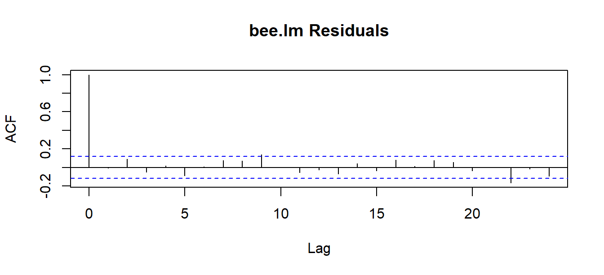
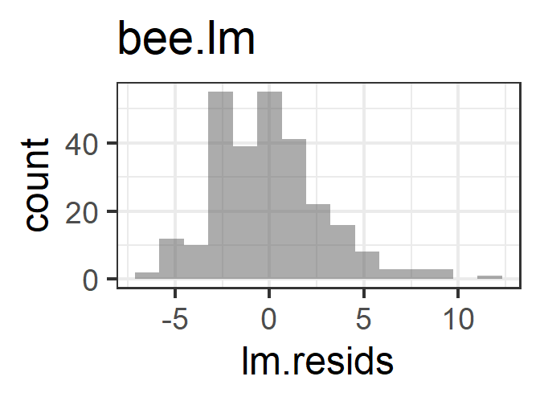
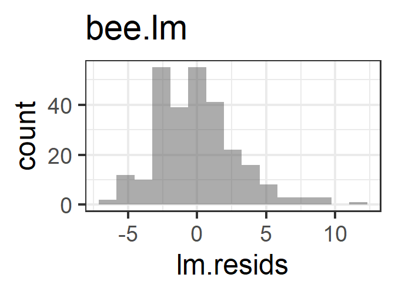

Chapter 6 Regression for Count Data
So far, we have fitted regression models for continuous-valued quantitative response variables. What if our response variable is really count data – discrete quantitative values limited to zero and positive integers?
6.1 Data Source
The dataset used here is beevisits, from:
Felicity Muth, Jacob S. Francis, and Anne S. Leonard. 2017. Bees use the taste of pollen to determine which flowers to visit. Biology Letters 12(7): DOI: 10.1098/rsbl.2016.0356. http://rsbl.royalsocietypublishing.org/content/roybiolett/12/7/20160356.full.pdf.

6.2 A bad idea: multiple linear regression model

## colony beename treatment target.colour
## W:126 giantbeeYsucroseyellow: 3 Quinine :90 blue :138
## X: 66 o51Wsucroseblue : 3 Cellulose:90 yellow:132
## Y: 78 o54Wquinineblue : 3 Sucrose :90
## o58Wcelluloseyellow : 3
## o60Wcelluloseblue : 3
## o63Wquinineblue : 3
## (Other) :252
## novisits flower
## Min. : 0.000 familiar:90
## 1st Qu.: 1.000 novel :90
## Median : 3.000 target :90
## Mean : 4.437
## 3rd Qu.: 7.000
## Max. :21.000
## ##
## Call:
## lm(formula = novisits ~ flower + treatment + colony, data = beevisits)
##
## Residuals:
## Min 1Q Median 3Q Max
## -6.5668 -2.1113 -0.2847 1.5665 11.5767
##
## Coefficients:
## Estimate Std. Error t value Pr(>|t|)
## (Intercept) 2.1113 0.4440 4.755 3.27e-06 ***
## flowernovel -1.6778 0.4386 -3.825 0.000163 ***
## flowertarget 5.4556 0.4386 12.438 < 2e-16 ***
## treatmentCellulose 2.6883 0.4389 6.124 3.30e-09 ***
## treatmentSucrose 2.7240 0.4415 6.170 2.56e-09 ***
## colonyX -0.8318 0.4491 -1.852 0.065110 .
## colonyY -1.8493 0.4254 -4.347 1.97e-05 ***
## ---
## Signif. codes: 0 '***' 0.001 '**' 0.01 '*' 0.05 '.' 0.1 ' ' 1
##
## Residual standard error: 2.942 on 263 degrees of freedom
## Multiple R-squared: 0.5763, Adjusted R-squared: 0.5667
## F-statistic: 59.63 on 6 and 263 DF, p-value: < 2.2e-16
 

6.3 Problems with the linear model
What problems do we have with this model (its appropriateness, or goodness of fit to the data)?
- Non-constant error variance
- Non-normality of residuals
- Some predicted values are less than 0 – it’s impossible that a bee could visit a flower a negative number of times!
6.4 Poisson Regression
Detailed notes on the model equation were filled in here in class
6.4.1 Fitting the Model
prm <- glm(novisits ~ flower + treatment +
colony, data=beevisits,
family=poisson(link='log'))
summary(prm)##
## Call:
## glm(formula = novisits ~ flower + treatment + colony, family = poisson(link = "log"),
## data = beevisits)
##
## Deviance Residuals:
## Min 1Q Median 3Q Max
## -2.9940 -1.3124 -0.3860 0.7794 4.7020
##
## Coefficients:
## Estimate Std. Error z value Pr(>|z|)
## (Intercept) 0.79055 0.08695 9.092 < 2e-16 ***
## flowernovel -0.75072 0.10442 -7.189 6.51e-13 ***
## flowertarget 0.99945 0.06916 14.451 < 2e-16 ***
## treatmentCellulose 0.69817 0.07910 8.827 < 2e-16 ***
## treatmentSucrose 0.70953 0.07967 8.906 < 2e-16 ***
## colonyX -0.17521 0.07175 -2.442 0.0146 *
## colonyY -0.43724 0.07311 -5.981 2.22e-09 ***
## ---
## Signif. codes: 0 '***' 0.001 '**' 0.01 '*' 0.05 '.' 0.1 ' ' 1
##
## (Dispersion parameter for poisson family taken to be 1)
##
## Null deviance: 1236.33 on 269 degrees of freedom
## Residual deviance: 542.05 on 263 degrees of freedom
## AIC: 1260.6
##
## Number of Fisher Scoring iterations: 56.4.2 Conditions
What conditions must hold for this model to be appropriate?
- Response variable (y) contains count data
- Linearity: \(log(\lambda_{i})\) is a linear function of the covariates \(x_1\), \(x_2\), … \(x_n\). (Later we will consider how to check this when some covariates are quantitative…in brief: plot log(rate) as a function of each covariate and look for (no non-)linear trend.)
- Mean = Variance
- Independence (of residuals)
- There is not a condition specifying a PDF that the residuals should follow.
6.4.3 Model Assessment
Which conditions can we check already?

What does type='response' mean?
This means that the residuals are reported on the same scale as the response variable (that is, in units of counts, rather than log(counts)).
beevisits <- beevisits %>%
mutate(pm.resids = resid(prm, type='response'),
pm.fitted = fitted(prm))
gf_point(pm.resids ~ pm.fitted, data=beevisits) %>%
gf_labs(x='Fitted Values', y='Residuals')
This trumpet pattern is what we expect! Why?
If the variance equals the mean, then as the mean (fitted value) goes up, then the variance (spread of residuals) will also be larger.
But how can we decide if it’s the right amount of increase in variance with increase in fitted value? We can compute Pearson residuals, which are scaled by the expected variance. The Pearson residuals should have approximately constant variance as a function of fitted values, and a standard deviation of about 1.
beevisits <- beevisits %>%
mutate(pm.pearson.resids = resid(prm, type='pearson'))
gf_point( pm.pearson.resids ~ pm.fitted, data=beevisits) %>%
gf_labs(x='Fitted Values', y='Pearson Residuals')
A more complex solution: we could divide the fitted values into bins (choice of bin size is somewhat arbitrary; generally, you want them as small as possible, but still containing enough observations per bin to get good mean and variance estimates). In each bin, compute the mean and the variance of the residuals. Plot these means vs these variances and see if the slope is 1 (and intercept 0).
First, split the fitted values into 5 bins:
## colony beename treatment target.colour novisits flower
## 1 Y giantbeeYsucroseyellow Sucrose yellow 12 target
## 2 W o51Wsucroseblue Sucrose blue 8 target
## 3 W o54Wquinineblue Quinine blue 13 target
## 4 W o58Wcelluloseyellow Cellulose yellow 9 target
## 5 W o60Wcelluloseblue Cellulose blue 11 target
## 6 W o63Wquinineblue Quinine blue 5 target
## lm.resids lm.fitted pm.resids pm.fitted pm.pearson.resids fitted.bins
## 1 3.5585187 8.441481 4.1360526 7.863947 1.4749108 (7.57,9.88]
## 2 -2.2907806 10.290781 -4.1767222 12.176722 -1.1969345 (9.88,12.2]
## 3 5.4331935 7.566806 7.0105824 5.989418 2.8645856 (5.27,7.57]
## 4 -1.2551114 10.255111 -3.0392024 12.039202 -0.8759126 (9.88,12.2]
## 5 0.7448886 10.255111 -1.0392024 12.039202 -0.2995031 (9.88,12.2]
## 6 -2.5668065 7.566806 -0.9894176 5.989418 -0.4042847 (5.27,7.57]Next, compute the means and variances in each bin, view the result, and plot:
binned.bees <- beevisits %>%
group_by(fitted.bins) %>%
summarise(mean = mean(pm.fitted, na.rm=TRUE),
var = var(pm.resids))
binned.bees## # A tibble: 5 x 3
## fitted.bins mean var
## <fct> <dbl> <dbl>
## 1 (0.661,2.97] 1.77 3.34
## 2 (2.97,5.27] 4.28 10.6
## 3 (5.27,7.57] 5.99 21.3
## 4 (7.57,9.88] 7.83 12.8
## 5 (9.88,12.2] 11.5 13.5gf_point(var ~ mean, data=binned.bees) %>%
gf_labs(x='Mean Fitted Value',
y='Variance of Residuals') %>%
gf_abline(slope=1, intercept=0)
That’s a bit of a pain, and still a judgment call at the end.
How else can we check the Mean = Variance condition?
6.4.4 Checking for overdispersion using overdispersion factor
We can estimate the overdispersion factor. This satisfies
\[ \text{residual variance} = \text{overdispersion factor} * \text{mean}\]
So if it’s a lot larger than 1, we have a problem. The function overdisp_fun() in package s245 computes an estimate:
## [1] 2.047036Here, it’s about 2: not too terrible, but still, residual variance is double what it should be according to our model. (Usually if the overdispersion is larger than 2 we will prefer a different model that better accounts for the fact that \(\text{mean} \neq \text{variance}\).)
6.5 Accounting for overdispersion: Negative Binomial Models
Finally, we could simply fit a model that allows for a more permissive mean-variance relationship (where the variance can be larger or smaller than the mean, by different amounts), and see if it is a better fit to the data according it our IC. The negative binomial distributions (type I and II) do this:
require(glmmTMB)
nbm1 <- glmmTMB(novisits ~ flower + treatment +
colony, data=beevisits,
family=nbinom1(link='log'))
nbm2 <- glmmTMB(novisits ~ flower + treatment +
colony, data=beevisits,
family=nbinom2(link='log'))
summary(nbm1)## Family: nbinom1 ( log )
## Formula: novisits ~ flower + treatment + colony
## Data: beevisits
##
## AIC BIC logLik deviance df.resid
## 1182.6 1211.4 -583.3 1166.6 262
##
##
## Overdispersion parameter for nbinom1 family (): 1.07
##
## Conditional model:
## Estimate Std. Error z value Pr(>|z|)
## (Intercept) 0.71730 0.12287 5.838 5.28e-09 ***
## flowernovel -0.74144 0.14503 -5.112 3.18e-07 ***
## flowertarget 1.03838 0.09810 10.585 < 2e-16 ***
## treatmentCellulose 0.71563 0.11167 6.408 1.47e-10 ***
## treatmentSucrose 0.74317 0.11149 6.666 2.63e-11 ***
## colonyX -0.11496 0.09974 -1.153 0.249038
## colonyY -0.38387 0.10155 -3.780 0.000157 ***
## ---
## Signif. codes: 0 '***' 0.001 '**' 0.01 '*' 0.05 '.' 0.1 ' ' 1## Family: nbinom2 ( log )
## Formula: novisits ~ flower + treatment + colony
## Data: beevisits
##
## AIC BIC logLik deviance df.resid
## 1207.3 1236.1 -595.6 1191.3 262
##
##
## Overdispersion parameter for nbinom2 family (): 4.69
##
## Conditional model:
## Estimate Std. Error z value Pr(>|z|)
## (Intercept) 0.73536 0.11775 6.245 4.24e-10 ***
## flowernovel -0.72548 0.12693 -5.716 1.09e-08 ***
## flowertarget 1.04379 0.09983 10.456 < 2e-16 ***
## treatmentCellulose 0.76192 0.11229 6.785 1.16e-11 ***
## treatmentSucrose 0.76936 0.11424 6.734 1.65e-11 ***
## colonyX -0.16805 0.10838 -1.551 0.121
## colonyY -0.51527 0.10761 -4.788 1.68e-06 ***
## ---
## Signif. codes: 0 '***' 0.001 '**' 0.01 '*' 0.05 '.' 0.1 ' ' 1We can use AIC or BIC-based model selection to decide which model fits best, between Poisson, NB1, and NB2 models.
## df AIC
## prm 7 1260.621
## nbm1 8 1182.575
## nbm2 8 1207.286We have a clear winner: NB1!
6.6 Accounting for overdispersion: quasi-Poisson Model
Or yet another option…in our class, we will not use quasi-Poisson models as much, as they are fitted via quasi-likelihood and this complicates model selection.
qprm <- glm(novisits ~ flower + treatment +
colony, data=beevisits,
family=quasipoisson(link='log'))
summary(qprm)##
## Call:
## glm(formula = novisits ~ flower + treatment + colony, family = quasipoisson(link = "log"),
## data = beevisits)
##
## Deviance Residuals:
## Min 1Q Median 3Q Max
## -2.9940 -1.3124 -0.3860 0.7794 4.7020
##
## Coefficients:
## Estimate Std. Error t value Pr(>|t|)
## (Intercept) 0.79055 0.12440 6.355 9.14e-10 ***
## flowernovel -0.75072 0.14940 -5.025 9.32e-07 ***
## flowertarget 0.99945 0.09896 10.100 < 2e-16 ***
## treatmentCellulose 0.69817 0.11317 6.169 2.58e-09 ***
## treatmentSucrose 0.70953 0.11399 6.225 1.90e-09 ***
## colonyX -0.17521 0.10266 -1.707 0.0891 .
## colonyY -0.43724 0.10460 -4.180 3.97e-05 ***
## ---
## Signif. codes: 0 '***' 0.001 '**' 0.01 '*' 0.05 '.' 0.1 ' ' 1
##
## (Dispersion parameter for quasipoisson family taken to be 2.047071)
##
## Null deviance: 1236.33 on 269 degrees of freedom
## Residual deviance: 542.05 on 263 degrees of freedom
## AIC: NA
##
## Number of Fisher Scoring iterations: 5We should not compare AIC with QAIC to compare two models, so to decide between Poisson and quasi-Poisson (if you ever use it) you must rely on the model assessment plots and the overdispersion factor to decide which is better.
6.7 Model selection with dredge() and (Q)AIC, BIC
Poisson and negative binomial models are fitted via maximum likelihood, so AIC or BIC may be used for model selection.
How can we use model selection criteria in a case where the likelihood can’t be computed exactly?
The quasi (log) likelihood is an approximation to the likelihood. It has some properties in common with a (log) likelihood, but is not a likelihood; we resort to using it in cases where the (log) likelihood can not even be evaluated.
With some code/mathematical gymnastics, we can use principles of quasi-likelihood to estimate QAIC (quasi-AIC, or AIC based on quasi-likelihood) in R for model selection.
6.7.1 Review: all subsets selection with dredge()
What if, instead of comparing two (or a few) specific models, we want to compare all possible models that contain some combination of a set of candidate covariates? The package MuMIn contains a function, dredge(), that takes as input a “full” model (one containing all the candidate covariates). It then computes AIC (or other model selection criteria) for all possible models containing subsets of the covariate and reports the results in a ranked table. For example, for our Poisson regression model, we could do:
require(MuMIn)
#have to make sure na.action is 'na.fail' for input model
prm <- update(prm, na.action='na.fail')
dredge(prm, rank='AIC')## Global model call: glm(formula = novisits ~ flower + treatment + colony, family = poisson(link = "log"),
## data = beevisits, na.action = "na.fail")
## ---
## Model selection table
## (Intrc) colny flowr trtmn df logLik AIC delta weight
## 8 0.7905 + + + 7 -623.310 1260.6 0.00 1
## 7 0.6428 + + 5 -642.317 1294.6 34.01 0
## 4 1.3100 + + 5 -677.205 1364.4 103.79 0
## 3 1.1560 + 3 -695.120 1396.2 135.62 0
## 6 1.1240 + + 5 -898.637 1807.3 546.65 0
## 5 0.9767 + 3 -917.644 1841.3 580.67 0
## 2 1.6440 + 3 -952.532 1911.1 650.44 0
## 1 1.4900 1 -970.446 1942.9 682.27 0
## Models ranked by AIC(x)## Global model call: glm(formula = novisits ~ flower + treatment + colony, family = poisson(link = "log"),
## data = beevisits, na.action = "na.fail")
## ---
## Model selection table
## (Intrc) colny flowr trtmn df logLik BIC delta weight
## 8 0.7905 + + + 7 -623.310 1285.8 0.00 1
## 7 0.6428 + + 5 -642.317 1312.6 26.82 0
## 4 1.3100 + + 5 -677.205 1382.4 96.59 0
## 3 1.1560 + 3 -695.120 1407.0 121.23 0
## 6 1.1240 + + 5 -898.637 1825.3 539.46 0
## 5 0.9767 + 3 -917.644 1852.1 566.27 0
## 2 1.6440 + 3 -952.532 1921.9 636.05 0
## 1 1.4900 1 -970.446 1946.5 660.68 0
## Models ranked by BIC(x)6.7.2 Review: IC “weights”
Note the last two columns of the dredge output: the “delta” (or \(\delta\)) AIC or BIC values and the “weights”. The \(\delta\)s are obtained by simply subtracting the best model’s IC value from that of each other model.
We already mentioned a rule of thumb: that the \(\delta IC\) should be at least 3 or to provide reasonable evidence that one model is really better than the other. Another way of measuring the differences between models is to use model weights. Theoretically, these measure the relative likelihoods of different models; you can think of them as giving the probability that a given model is the best-fitting one in the set of models examined, according to the IC being used.
Model weights are computed simply according to: \[ e^\frac{-\delta IC}{2}\]
And they sum to one for all models in a dredge().
6.7.3 Extending dredge() to quasi-Likelihood
With (rather a lot of) effort to define some custom functions, we can do the same thing for a quasi-Poisson model using quasi-AIC. Note: This idea is based on notes by Ben Bolker provided with the R package bbmle.
require(MuMIn)
# modify a glm() output object so that
# it contains a quasipoisson fit but the
# AIC (likelihood) from the equivalent regular Poisson model
x.quasipoisson <- function(...) {
res <- quasipoisson(...)
res$aic <- poisson(...)$aic
res
}
# function to extract the overdispersion parameter
# from a quasi model
dfun <- function(object) {
with(object,sum((weights * residuals^2)[weights > 0])/df.residual)
}
# function that modifies MuMIn::dredge()
# for use with quasi GLM
qdredge <- function(model, family='x.quasipoisson', na.action=na.fail, chat = dfun(model), rank='QAIC', ...){
model2 <- update(model, family=family, na.action=na.action)
(dt <- dredge(model2, rank=rank, chat=chat, ...))
}
#do "dredge" for model selection
qdredge(qprm)## Global model call: glm(formula = novisits ~ flower + treatment + colony, family = family,
## data = beevisits, na.action = na.action)
## ---
## Model selection table
## (Intrc) colny flowr trtmn df logLik rank delta weight
## 8 0.7905 + + + 7 -623.310 625.0 0.00 0.999
## 7 0.6428 + + 5 -642.317 639.5 14.57 0.001
## 4 1.3100 + + 5 -677.205 673.6 48.66 0.000
## 3 1.1560 + 3 -695.120 687.1 62.16 0.000
## 6 1.1240 + + 5 -898.637 890.0 265.00 0.000
## 5 0.9767 + 3 -917.644 904.5 279.57 0.000
## 2 1.6440 + 3 -952.532 938.6 313.65 0.000
## 1 1.4900 1 -970.446 952.1 327.15 0.000
## Models ranked by rank(x, chat = 2.04707063774377)Note: the qdredge() function is also provided for you in the package s245. So if you do want to use this, all you need to do is use s245::qdredge() instead of dredge().
6.8 Offsets
In our model, the response variable was the number of flowers visited by a bee, and each bee was in the same experimental setting for the same amount of time, so there was no need to account for effort or time spent in each case.
This is not always true: consider, for example:
- Dolphin surveys
- Bird counts
- Consider the schools and crime example from homework as well
In this case, it would be natural to adjust for effort. The intuitive way to do it would be to use counts per unit effort as the response variable:
\[ log(\frac{\lambda_i}{effort}) = \beta_0 + \dots \]
But notice that this is equivalent to including \(log(effort)\) as an ``offset" on the right hand side of the regression equation:
\[ log(\lambda_i) = \beta_0 + \dots + log(effort)\]
This is how we specify models with offsets in R:
Note: if you use dredge() with a model with an offset, be sure to specify the offset as a “fixed” term, i.e. a term that must be included in all models:
6.9 Prediction Plots
Once you have a “best” model, how do you interpret it?
When we went to great lengths to make prediction plots for a linear regression model so we could “see” the slope of the predicted relationship, you may have wondered: why bother? I can just look at the slope estimate and get the same insight!
Now, with a more complicated model equation with a link function, it’s not so easy. Now, we will really appreciate those prediction plots!
With the link function and the Poisson distribution, it is more challenging to interpret the coefficients of the model directly. The easiest way to understand the effects of different predictors is to look at plots of model predictions. However, as always we don’t want to plot fitted(model) as a function of each predictor in a model with more than one predictor; predictors other than the one we are interested in will influence the predictions, introducing extra variation. Instead, we will construct a new (fake) dataset to make predictions for, in which all predictors but the one we are interested in are held constant. For example, using our quasi-Poisson model and looking at the effect of colony (predicted values with 95% CIs):
newdata <- data.frame(colony=c('W', 'X', 'Y'),
flower='familiar',
target.colour='blue',
treatment='Cellulose')
pred = predict(qprm, newdata=newdata,
type='response',
se.fit=TRUE)
newdata <- newdata %>%
mutate(preds = pred$fit,
CIlow = pred$fit - 1.96*pred$se.fit,
CIup = pred$fit + 1.96*pred$se.fit)
gf_point(preds ~ colony, data=newdata) %>%
gf_labs(x='Colony', y='Predicted\nN. Visits') %>%
gf_errorbar(CIlow + CIup ~ colony, data=newdata)
If we had a quantitative predictor instead, the process would be similar, except when we define newdata, we would have to choose a range and granularity for which to make predictions. For example, imagine if bee length in mm was one of our predictors, and we wanted predictions for lengths between 0.5 and 3 mm (with a value every 0.05mm). We might begin:
newdata <- expand.grid(bee.length = seq(from=0.05, by=0.05, to=3),
colony=c('W'),
flower='familiar',
target.colour='blue',
treatment='Cellulose')
head(newdata)## bee.length colony flower target.colour treatment
## 1 0.05 W familiar blue Cellulose
## 2 0.10 W familiar blue Cellulose
## 3 0.15 W familiar blue Cellulose
## 4 0.20 W familiar blue Cellulose
## 5 0.25 W familiar blue Cellulose
## 6 0.30 W familiar blue CelluloseThen, when we make the plot, we would need to use gf\_ribbon() instead of gf\_errorbar() to show the CI.
We can also use pred_plot(fitted_model, 'variable_name') to make these plots with a lot less code (and if you need to know the values at which other predictors are fixed, use get_fixed(dataset)).